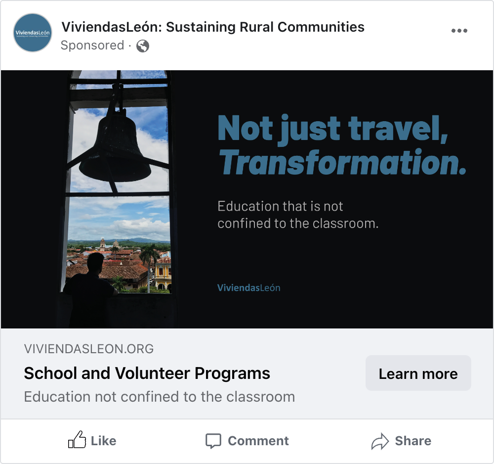
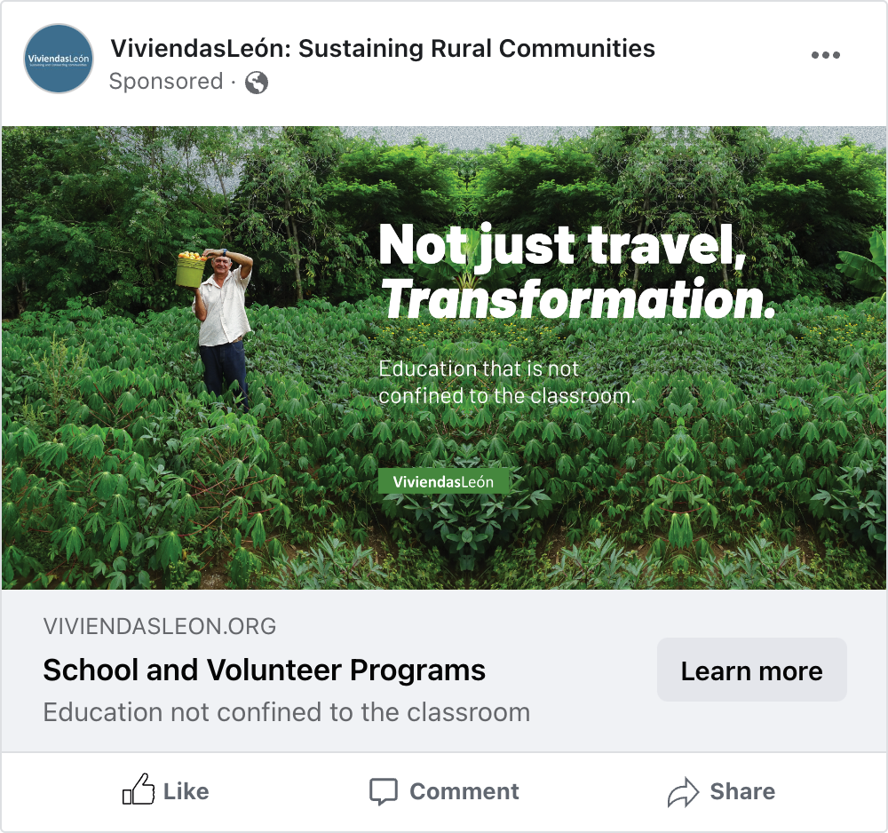
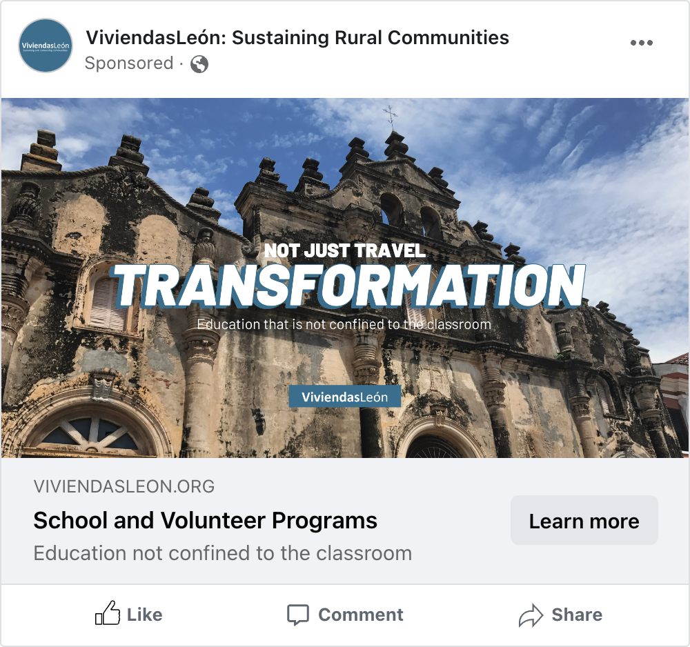
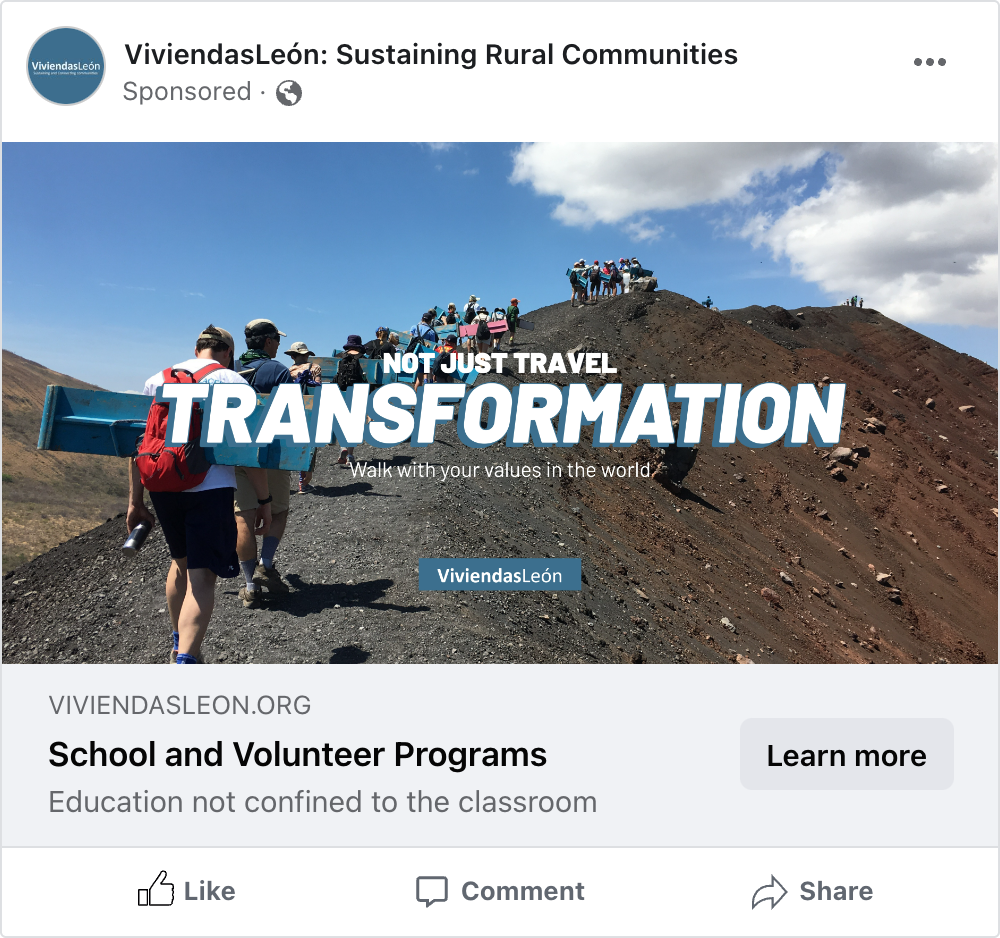
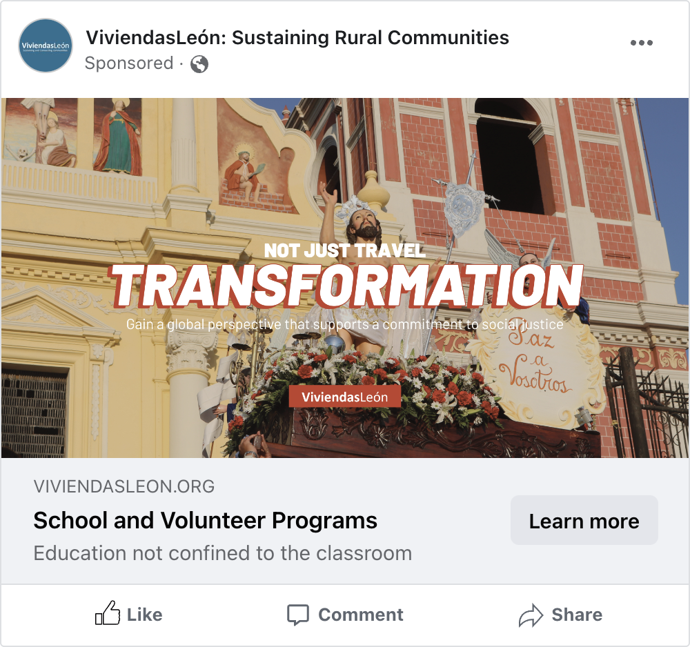
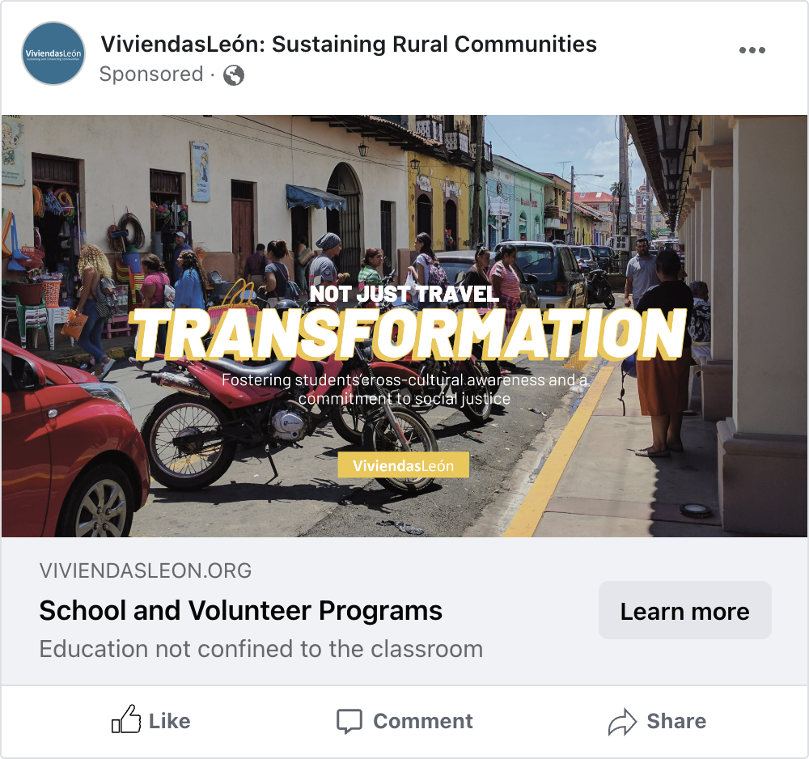
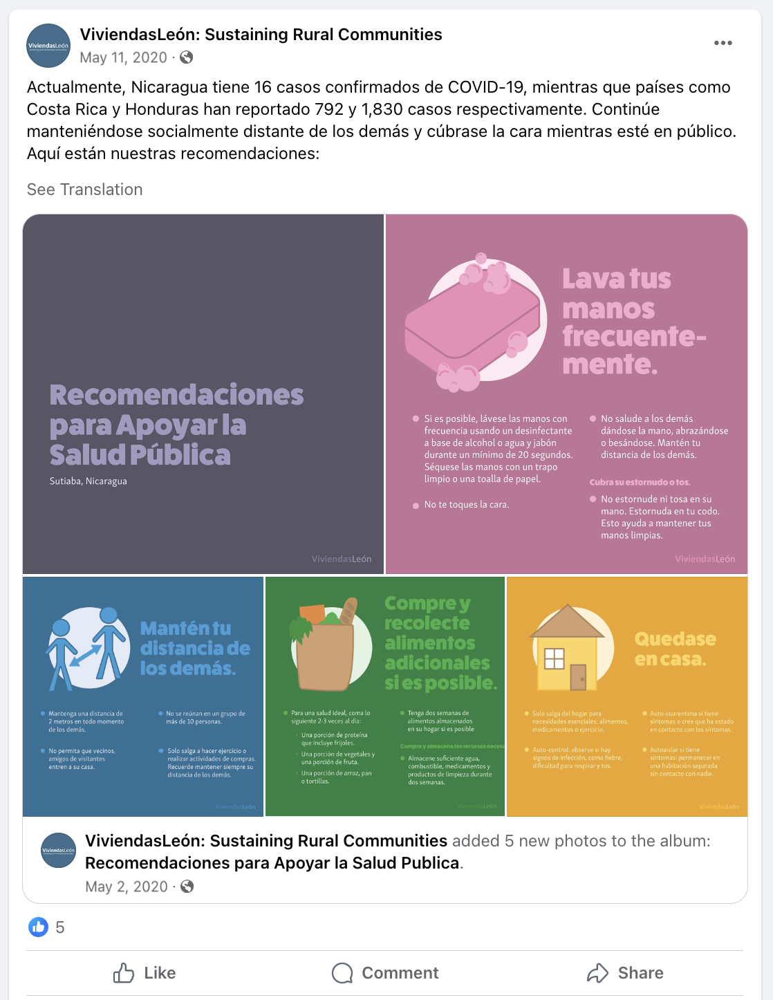

In Fall 2020, I served as a Graphic Design Intern for ViviendasLeón, a non-profit organization operating in Nicaragua and Guatemala with a mission to eliminate poverty in Central America. In my role, I aided the VivendasLeón Executive Team by conceptualizing and creating graphic design aspects of advertising campaigns, graphic content for social media in both English and Spanish, and VivendasLeón’s annual report for donors following existing brand guidelines and utilizing existing photography.
In this project, I was challenged to create a series of images for Facebook advertisements to encourage to get involved with ViviendasLeón's educational programs in Nicaragua and Guatemala. I was asked to utilze the tagline "Not just travel, transformation". In my designs, I showcased imagery of from previous years' programs in order to ellict a sense of wonder and interest to perspective students. I accompanied these images with bold typography and bright colors to create an eye-catching graphic.
 Facebook Ads with simpler typography
   Facebook Ads with bolder typography
During my internship with ViviendasLeón, the COVID-19 Global Pandemic hit. In response to the pandemic, health protocols were enforced worldwide. ViviendasLeón wanted to help communicate and show support for health recommendations from the Nicaraguan Ministry of Health designed to support rural public health in Sutiaba, Nicaragua. I aided by creating illustrations, typesetting, and designing graphics for social media in both English and Spanish.


Individual Panels for each Health Recommendation in English
Facebook Post from ViviendasLeón including each panel in English
Throughout my time as the Graphic Design Intern, I was tasked with designing ViviendasLeón's Annual Report, which is sent out yearly to donors to recap how funds were allocated during the year to help support ViviendasLeón's mission of to eliminating poverty in Central America. Though the COVID-19 pandemic slowed down this process, I ended my internship by presenting an 18 page booklet that would later be modified to include infromtion from 2020 to be mailed out to donors. In this porject, I edited exisiting photography to design the publication's layout, typography, and front and back covers.

ViviendasLeón Annual Report